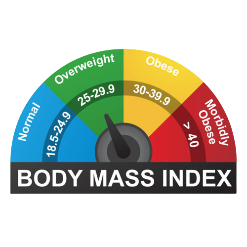

-
Home
-
"First"Aiders
Aims
Method
Kits
-
Join Us
50cm
50kg
59
overweight

Body Mass Index
The body mass index (BMI) is the metric currently in use for defining anthropometric height/weight characteristics in adults and for classifying (categorizing) them into groups. The common interpretation is that it represents an index of an individual’s fatness. It also is widely used as a risk factor for the development of or the prevalence of several health issues. In addition, it is widely used in determining public health policies.The BMI has been useful in population-based studies by virtue of its wide acceptance in defining specific categories of body mass as a health issue. However, it is increasingly clear that BMI is a rather poor indicator of percent of body fat.
Body fatness has been an important psychosocial issue among humans for millennia. It is clearly manifested by paleolithic statuettes of exceedingly plump women. This suggests being “full figured” was highly desirable at least for women. In contrast, images of obese people, males or females, are never exhibited in ancient Egyptian funerary wall paintings, stellae, or statues suggesting that fatness was not considered to be a desirable trait there. This also is the case in artifacts from other cultures in the Middle East in that era. Why the degree of fatness has varied in different cultures is not clear. However, it may have depended on the availability of a reliable food supply and the effort required in obtaining it.
More recently, the degree of rotundity considered ideal also has varied considerably in the general population, but particularly for young women. Before the 1920s, “full figured” women were considered to be desirable as long as the distribution was hourglass in type. However, the 1920s Flapper era introduced abbreviated and revealing dresses. The result was that thinness was not only desirable but also required. This concept has moderated but still influences women’s views of beauty and eating habits at present.